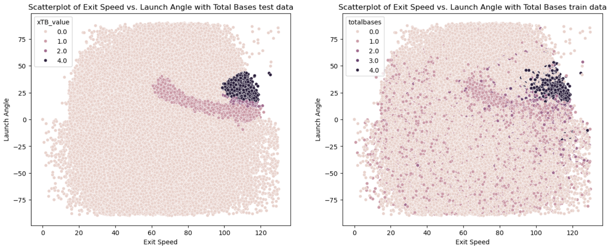
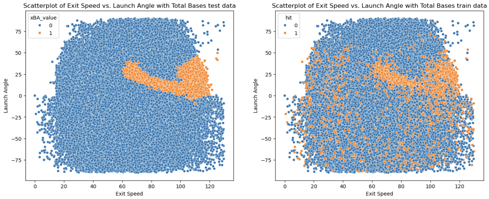

xBA and xTB Model
Expected Batting Average (xBA) and Expected Total Bases or SLG (xTB) are two metrics that are used to evaluate the quality of a hitter's performance based on their launch angle and exit velocity, ignoring defense and park effects. The model is a simple KNN model that with Optuna to tune the hyperparameters. The model was trained on 2022-2025 college Trackman data. The graphs below can show the expected outcome of a batter ball based on the launch angle and exit velocity in college baseball.

